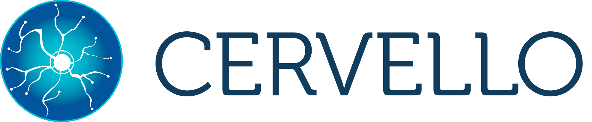

03 / Cervello BPMS
Cervello BPMS
Alguns dos meus colegas usavam o Cervello para atender chamados de TI e trabalhavam na mesma sala que eu. Nas conversas do dia a dia, eles me mostravam dificuldades que raramente chegavam à equipe de produto.
Entrei em 2018 e fui o único designer durante cerca de quatro anos. Os controles mudavam de aparência e de lugar conforme o módulo. O gerente de produto e eu começamos pelo caminho que o suporte percorria com mais frequência, do login até a abertura de um chamado. Eu levava os ajustes aos protótipos e voltava a conversar com os colegas para saber se as mudanças faziam sentido durante o atendimento.
Cada cliente podia usar as cores da própria marca. Gerei por código as combinações de texto e fundo e mantive as cores das mensagens de erro, por exemplo, para que o suporte pudesse reconhecê-las em qualquer tema. Na página inicial, propus uma biblioteca de imagens que os clientes pudessem usar nos atalhos sem pagar royalties a cada uso.
Algumas páginas ficavam a vários passos da tela inicial. Propus uma busca que alcançasse todos os módulos. O gerente de produto sugeriu mostrar também o caminho até a página encontrada. No aplicativo, propus dar menos destaque à configuração dos painéis. Depois da implantação, o suporte raramente precisava criar um painel ou configurar novamente a página inicial.
Como a equipe não tinha um desenvolvedor dedicado à interface, participei também da implementação. Substituí boa parte dos estilos do Bootstrap por componentes com a mesma aparência em diferentes módulos. Escrevi os estilos em SCSS e usei a convenção BEM para que as partes de cada componente seguissem uma regra comum de nomenclatura. Nos painéis, mantive a biblioteca que os desenvolvedores já usavam. A cada entrega, revisava as telas e atualizava o protótipo.
Os colegas do suporte que testaram as telas aprovaram as mudanças. O gerente de produto e a equipe comercial também aprovaram o resultado. A personalização ajudava nas apresentações a clientes com marcas diferentes. A empresa assinou novos contratos nesse período, mas os dados que acompanhávamos não permitem atribuí-los ao redesenho. Os componentes ficaram disponíveis para outros módulos. Se retomasse o projeto, envolveria os colegas do suporte também na escolha dos problemas que a equipe deveria resolver primeiro.